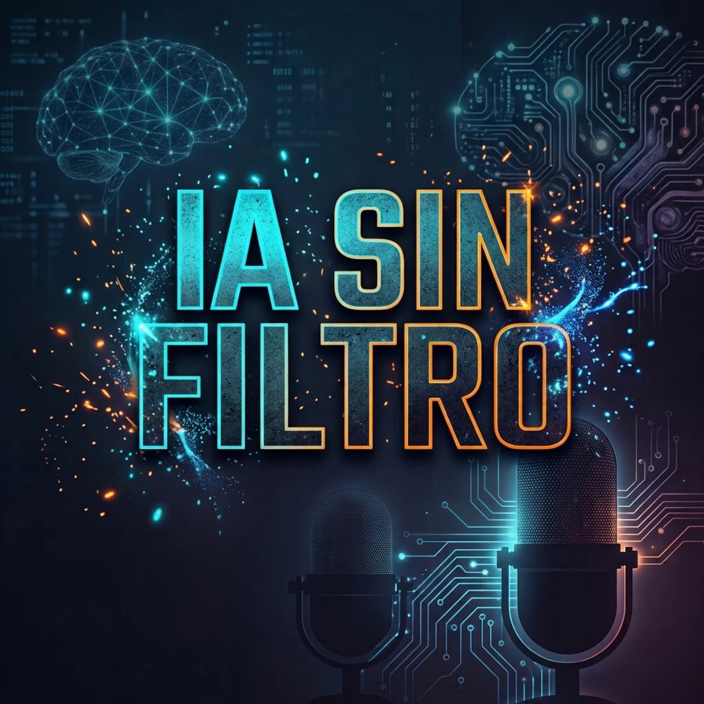

Píldoras semanales de 5 minutos sobre Inteligencia Artificial, Machine Learning y tecnologías emergentes, sin tecnicismos ni filtros. Conducido por José.
Escúchalo en tu plataforma favoritahttps://mgjosea.github.io/ia-sin-filtro-podcast/feed.xml
Un plan pedagógico de 208 episodios escalonados de Nivel 0 a Nivel 4
52 episodios. Alfabetización digital desde cero: qué es la IA, historia, mitos, diferencia entre ANI y AGI, y aplicaciones prácticas en la vida diaria.
52 episodios. Taller de Machine Learning, Big Data, tipos de entrenamiento (supervisado vs no supervisado), algoritmos y casos de uso en pymes.
52 episodios. Modelos de lenguaje, redes neuronales, Transformers, técnicas RAG, visión artificial y automatización de procesos industriales.
52 episodios. Agentes autónomos, robótica, IA en biotecnología, computación cuántica, gobernanza y el horizonte hacia la AGI.